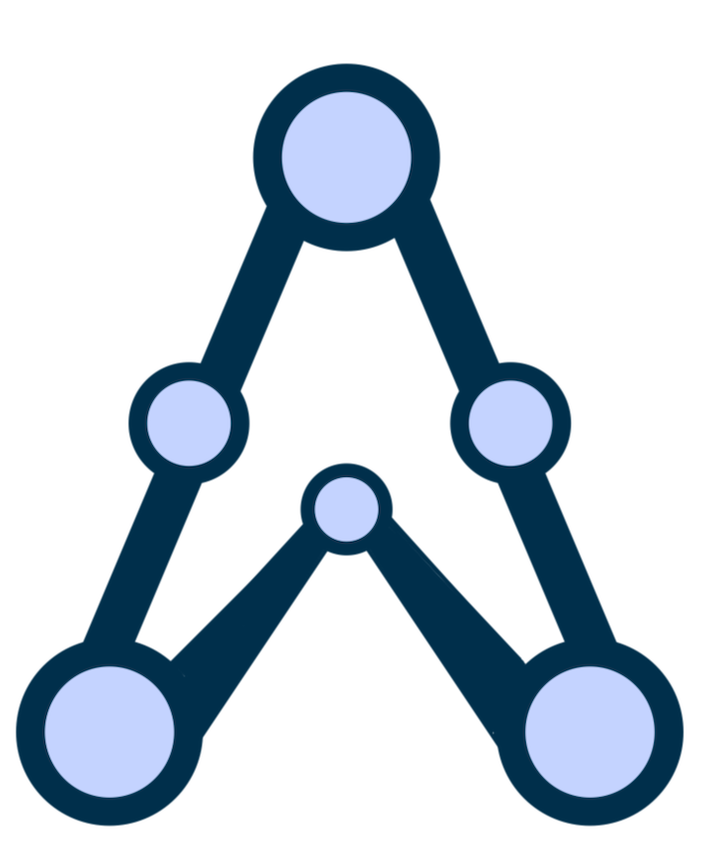
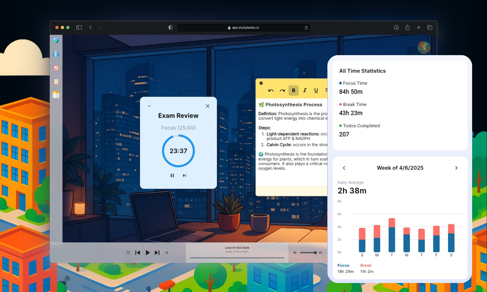
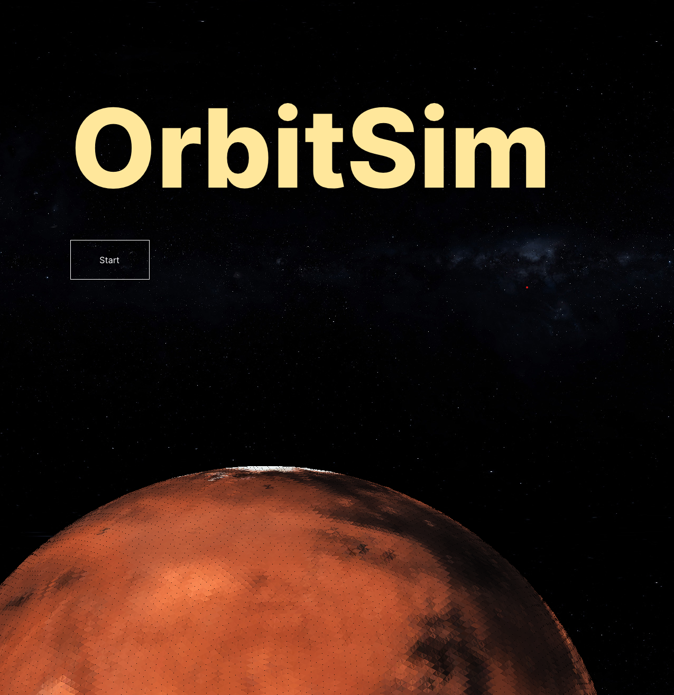

Selected Work
Engineering solutions across robotics, embedded systems, and intelligent software.
3DGS Drone Navigation
A photorealistic, differentiable drone simulator built from 3D Gaussian Splat reconstructions, used to train monocular RGB navigation policies across diverse scenes. Ongoing research at CMU's AirLab (Robotics Institute Summer Scholars).
View Project →
Ember
A differentiable 6-DOF rocket simulator that trains a neural thrust-vector-control flight controller by backpropagating through the physics itself — paired with a custom Teensy-based flight computer to fly the learned policy on real hardware.
View on GitHub →
OceanAI
An autonomous underwater vehicle (AUV) engineered to map ocean litter. Features a custom YOLOv5 vision pipeline and SLAM navigation, successfully identifying over 174,000 debris objects in field tests.
View Project →
Alpine
A modular library for rapidly prototyping Implicit Neural Representations (INRs). Provides researchers with object-oriented interfaces and visualization tools for scientific computing tasks.
View Project →
StudyBeats
A scalable productivity suite serving 800+ concurrent users. Integrates real-time task synchronization, Lo-Fi music streaming, and collaborative study tools into a unified web platform.
View Project →
OrbitSim
High-performance N-body gravity simulator visualizing 8,000+ active satellite trajectories in real-time. Built with a custom C++ engine using Vulkan for massive parallel rendering.
View Project →
Rocket Active Control
A custom flight computer and thrust vector control (TVC) system. Implements PID control loops and Kalman filtering to actively stabilize model rockets during ascent.
View Project →